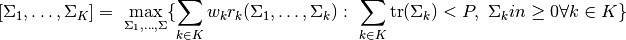
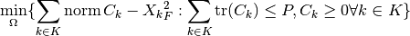
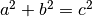
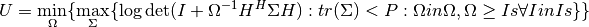

Welcome to Multi-Cell-MIMO’s documentation!¶
- mcm.mimo.MAC(Hs: List[Matrix], P: float, weights: List[float], Omega: Optional[Matrix] = None, rate_threshold: float = 1e-06, max_iterations: float = 30) Tuple[List[float], List[Matrix], List[int]][source]¶
Optimize uplink transmit covariances.
Given channel matrices :math:`(H_1, ldots, H_K) `

- Hs: List[Matrix]
Channel Matrices
- P: float
Transmit power constraint
- weights: List[float]
User weights
- Omega: Optional[Matrix]
Uplink noise covariance
- rate_threshold: float
Threshold for rate change to continue optimization
- max_iterations: float
Limit on the numnber of iterations
- rates: List[float]
User rates
- MAC_Covs: List[Matrices]
Transmit covariances
- order: List[int]
Decodicng order
- mcm.mimo.MACtoBCtransformation(Hs: List[Matrix], MAC_Covs: List[Matrix], MAC_decoding_order: List[int]) List[Matrix][source]¶
Hs MAC_Covs MAC_decoding_order
BC_Covs
- mcm.mimo.project_covariance_cvx(Xs: List[Matrix], P: float) List[Matrix][source]¶
Projects covariance matrices to power constraint.
Implements the optimization of
project_convariances()in CVX.Xs P
projected_Covs
- mcm.mimo.project_covariances(Covs: List[Matrix], P: float) List[Matrix][source]¶
Projects covariance matrices to power constraint..

- Covs
Covariances to be projected
- P
Target power constraint
- List[Matrix]
Projected Covariances
- mcm.mimo.project_eigenvalues_to_given_sum(eis: List[float], P: float) List[float][source]¶
eis P
projected_eis
- mcm.mimo.sort_channels(Hs: List[Matrix], weights: List[float]) Tuple[List[Matrix], List[float], List[int]][source]¶
Hs weights
Hs alphas order
- mcm.mimo_worst_case_noise.MAC_worst_case_noise_approx(Hs: List[Matrix], P: float, sigma: float = 1, weights: Optional[List[float]] = None, precision: float = 0.01) Tuple[List[float], Matrix, List[Matrix], List[int]][source]¶
Hs P sigma weights precision
rates_i Omega Covs order
- mcm.mimo_worst_case_noise.approx_inner_ptp(H: Matrix, Z: Matrix, P: float) Tuple[float, Matrix, Matrix][source]¶
H Z P
rate_i Z_gr Sigma
- mcm.mimo_worst_case_noise.inf_cons(H: Matrix, P: float, rate: float) List[Matrix][source]¶
Find constraints on the worst-case uplink noise for a user
- H
Channel matrix.
- P
Transmit power
- rate
Maximal rate
- Is
TODO constrainst to be used as …
Given a feasible uplink covariance we compute a set of matrices Is such that U = V .

V = min_Omega max_Sigma logdet(I + inv(Omega) @ H.conj().T @ Sigma @ H): tr(Sigma) < P : Omega in Omegas r = max_Sigma logdet(I + inv(Omega_p) @ H.conj().T @ Sigma @ H): tr(Sigma) < P
we know u <= r
We select the constrainst, such that the noise power in each mode of the channel is large enough that if we put all transmit power into that mode, the resulting rate is r. This guarantees a finite worst case rates when solving U instead of V.
- mcm.mimo_worst_case_noise.ptp_capacity_minimax(H: Matrix, R: Matrix, C: Matrix, Zs: List[Matrix], eps: float = 0.001) object[source]¶
Hello he
H R C Zs eps
float
- mcm.mimo_worst_case_noise.ptp_worst_case_noise_approx(H: Matrix, P: float, sigma: float = 1, precision: float = 0.01) Tuple[float, Matrix, Matrix][source]¶
H P sigma precision
rate_i Z Q
- mcm.mimo_worst_case_noise.ptp_worst_case_noise_static(HQHT: Matrix, sigma: float, precision: float = 0.01) Tuple[float, Matrix][source]¶
HQHT sigma precision
rate_i Z